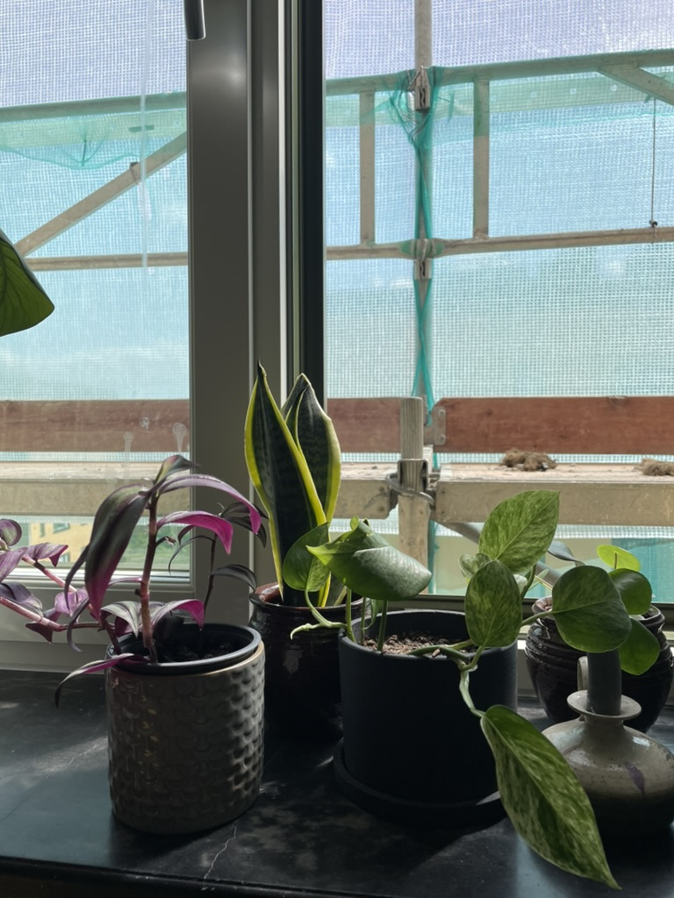
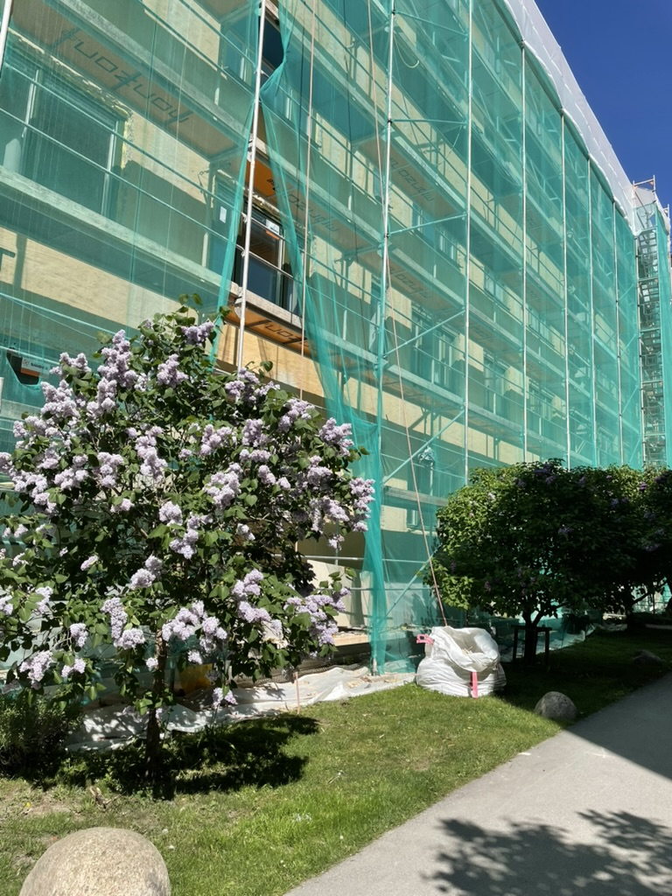
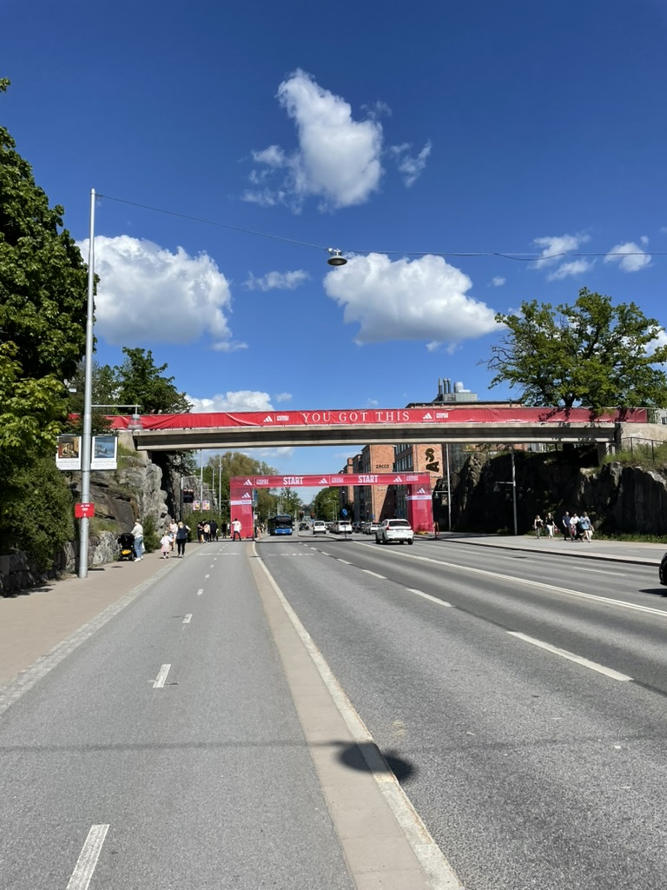
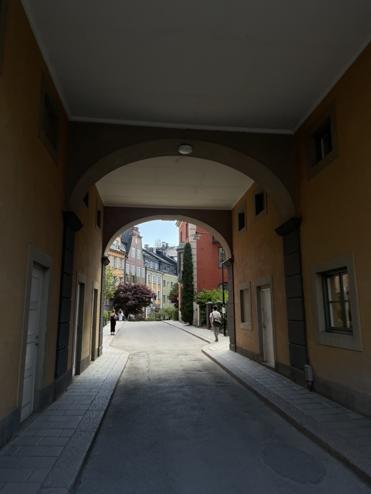
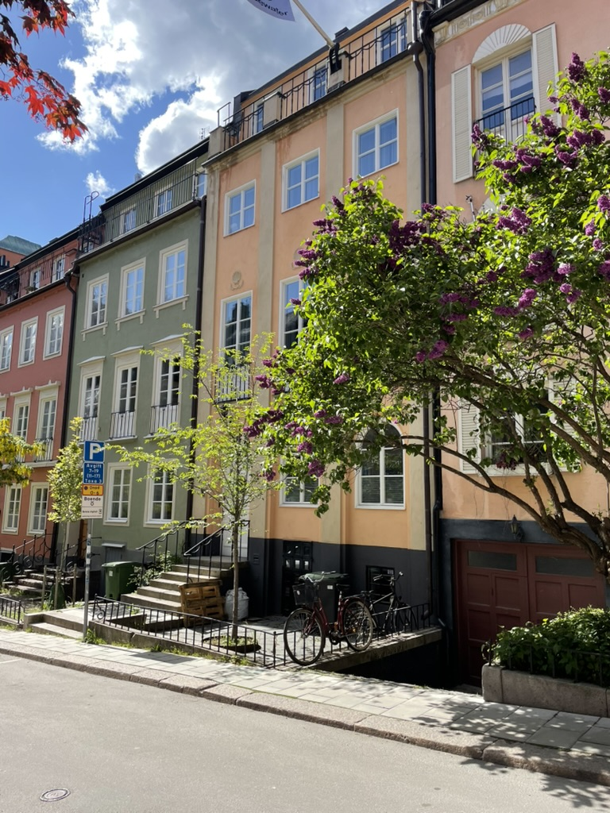
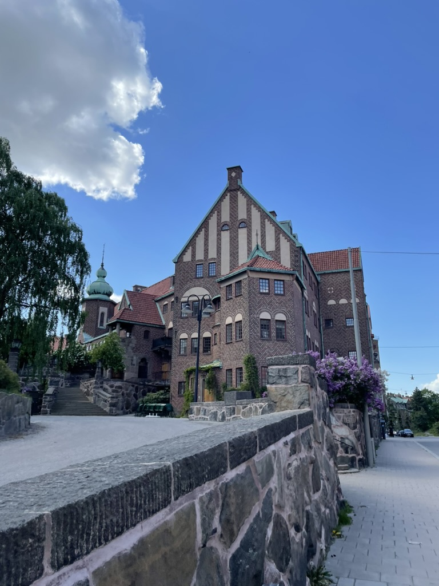
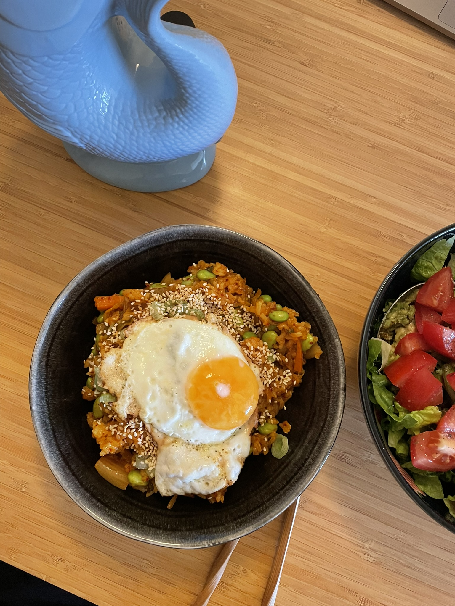

erledigungen und erster sommertag
von elias am freitag, 6. Juni 2025
Am Donnerstag war Christi Himmelfahrt. Ich weiß zwar nicht so ganz genau, was das ist, aber frei haben ist immer super. Und dann war das Wetter auch noch so gut. Seit zwei Wochen hatte es hier durchgehend geregnet, und jetzt war endlich mal die Sonne draußen und es war richtig warm.

Meine Pflanzen sollten auch den Feiertag feiern und ein bisschen Sommerluft schnuppern dürfen. Ich hab sie alle im Fenster platziert.
Leider steht vor dem Fenster dieses Baugerüst, sodass es für die Pflanzen eher Gewächshaus als Sommerurlaub wurde. Ich denke, sie waren trotzdem dankbar für die Abwechslung.

Während sich die Pflanzen sonnen durften, stand für mich eine Erledigung in der Stadt an. Ich musste meine Nummer für den anstehenden Marathon abholen. Ich hatte nicht erwartet, was für ein riesiges Straßenfest der Marathon ist. Aber dazu vielleicht mehr ein andermal.
 
Weil ich ja sowieso frei hatte und die Sonne so lieb schien, hing ich an meinen Ausflug noch einen kleinen ungeplanten Spaziergang durch ein Wohnviertel in Östermalm dran. Dabei war ich in der Danderydsgatan gelandet. Eine kleine, halb versteckte Gasse, in der man möglicherweise recht gerne leben würde. Sieht aus wie in der Vorstadt und ist trotzdem mitten in der Stadt. Bestimmt wird man langweilig, wenn man dort leben würde. Zum Glück kann ich mir das sowieso nicht leisten!

Die Engelbrektskirche sah auch sehr lieb aus. Sicher war drinnen ein Feiertagsgottesdienst. Außerdem hatten fast alle Häuser solche herrlichen Dachterrassen. Das würden die Pflanzen auch lieben!

Abends gab es dann noch Kimchi Fried Rice, meine liebste Neuentdeckung. Dauert nur 10 Minuten und schmeckt hervorragend. Man brät Kimchi mit Reis und ein bisschen Soja. Eventuell noch Sojabohnen und ein Spiegelei dazu. Mjam.